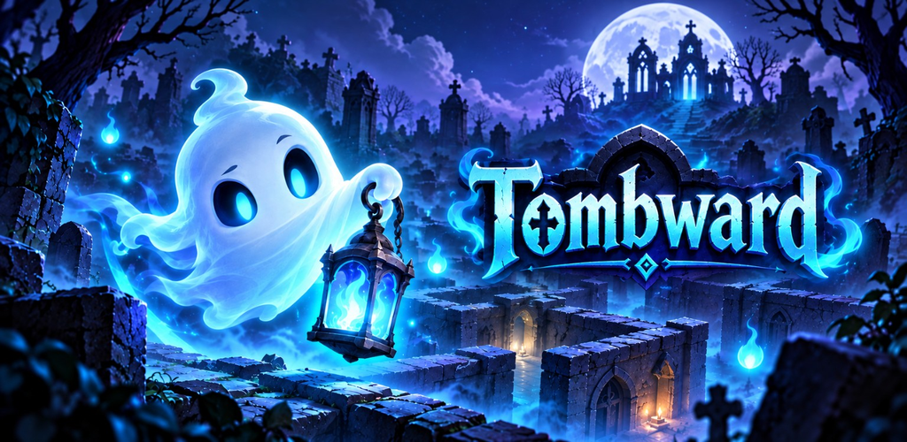
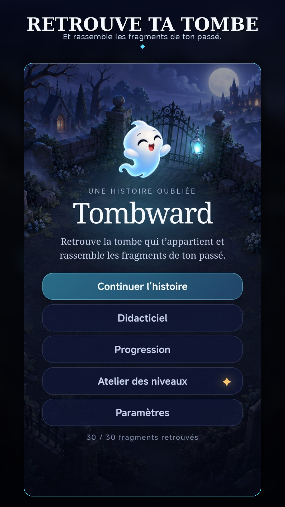
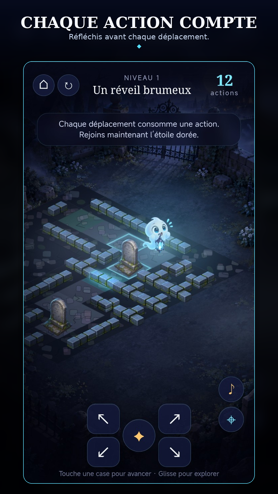
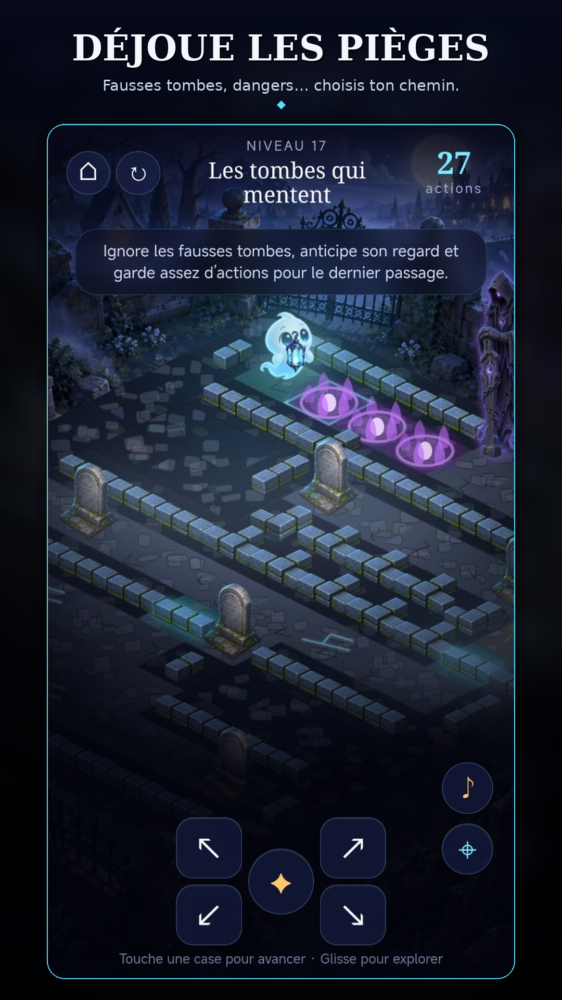
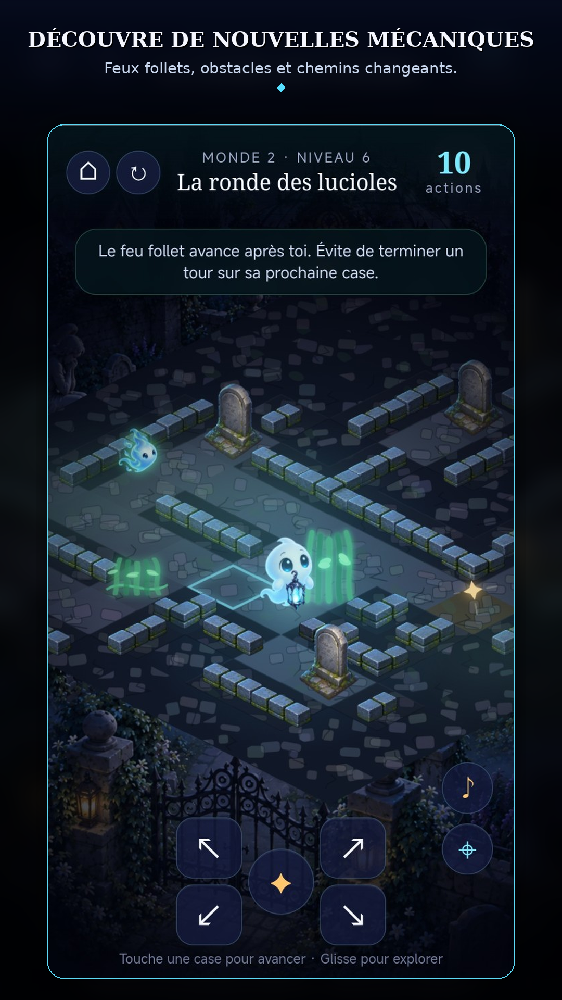
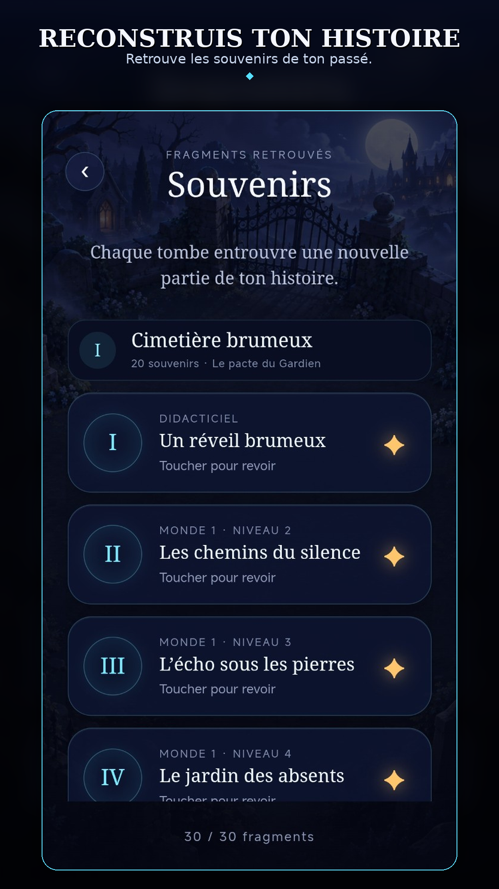
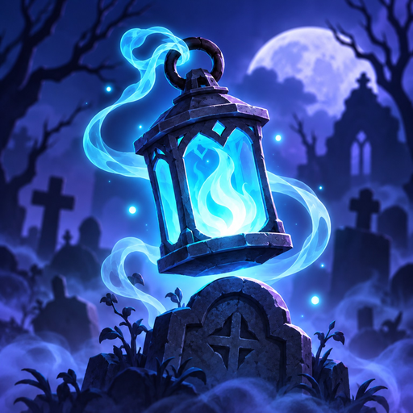

Réfléchis avant d’avancer
Chaque déplacement consomme une action. Trouve le bon chemin avant d’en manquer.

Une histoire oubliée.
Retrouve la tombe qui t’appartient et rassemble les fragments de ton passé.
LE JEU
Chaque déplacement consomme une action. Trouve le bon chemin avant d’en manquer.
Fausses tombes, zones dangereuses, gardiens et chemins contraints viennent compliquer chaque niveau.
Lanternes, murs spectraux et feux follets introduisent progressivement de nouvelles mécaniques.
Les fragments et souvenirs dévoilent peu à peu le passé du petit fantôme.
CAPTURES






TOMBWАRD
Développé par Nimodd.